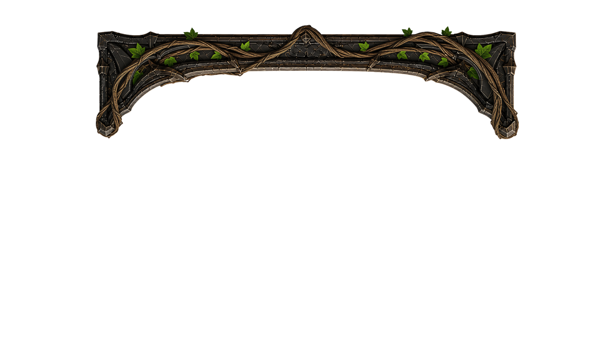
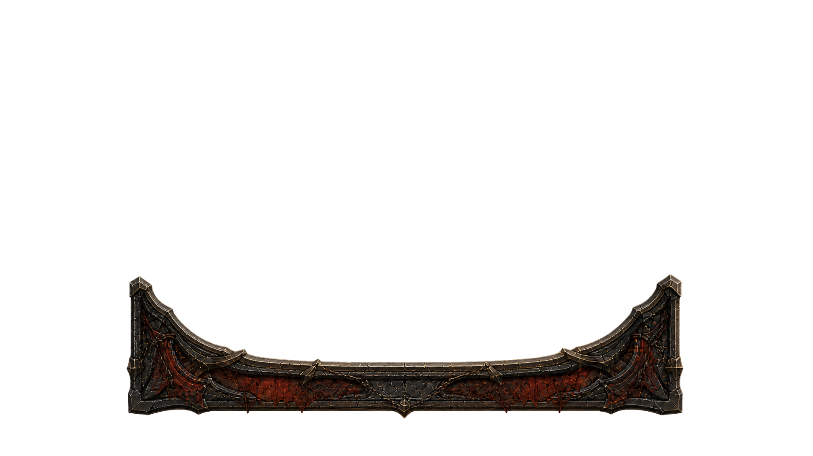
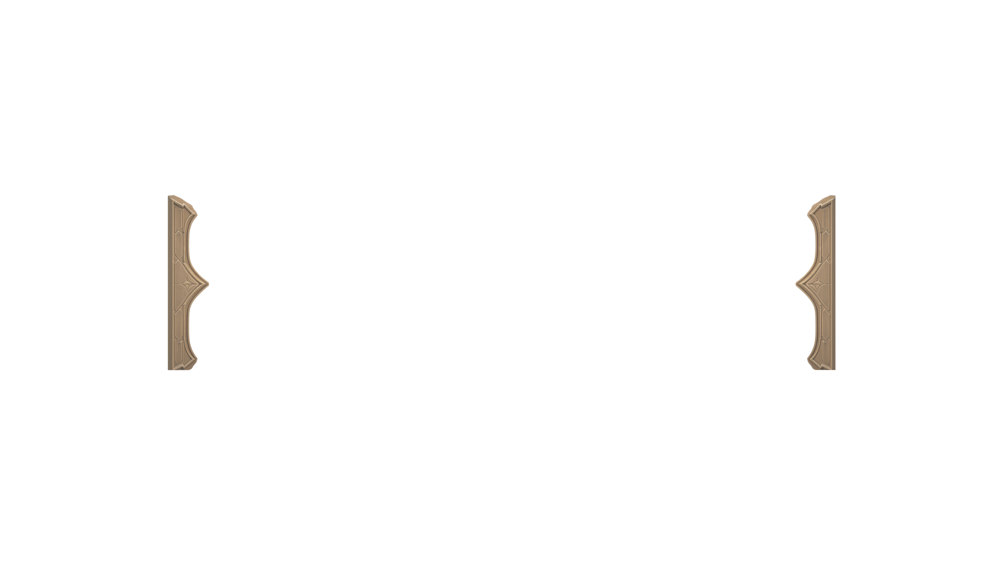
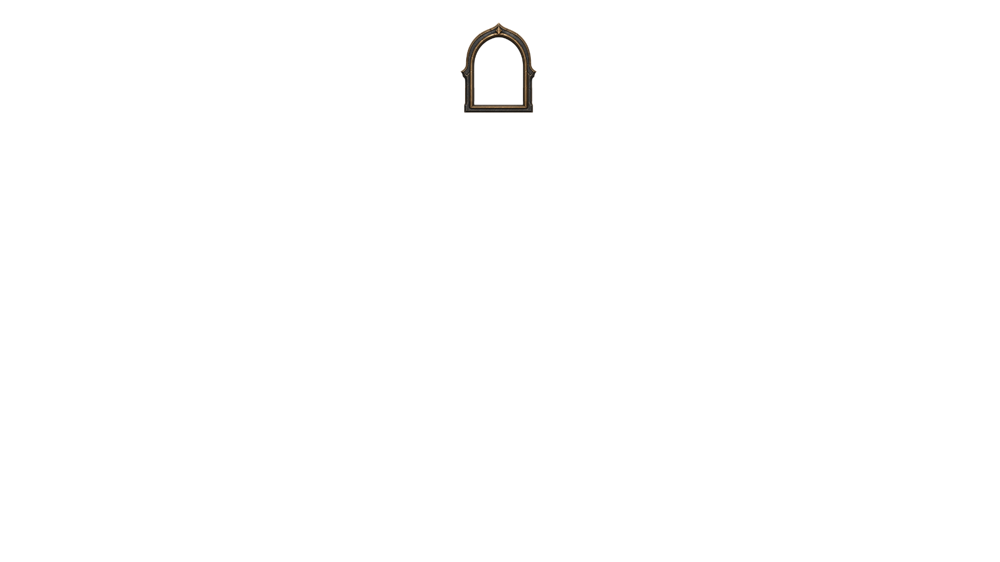

Marshal your forces across three lines of battle. Break the enemy's defenses, then their will.
Aggressive fire & sacrifice. Burn the enemy down before they can stabilize. Rewards fast, relentless pressure.
Patient growth & nature magic. Units strengthen over time. Rewards careful, long-game control.
Boss decks are a smaller build for the upcoming Boss Fight mode — same rules, half the size. Boss Mode gameplay itself isn't built yet; this just gets your decks ready for it.



